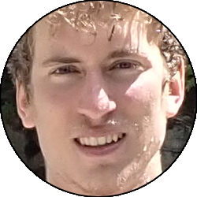
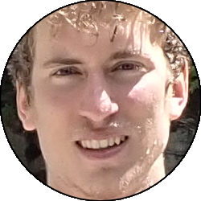

Relazione
| Data Uscita | 15-08-2023, Martedì | Area | Piz della Forcola-Pizzo Paglia |
|---|---|---|---|
| Luogo di Partenza | Parcheggio Bodengo 2 - Gordona (SO) | Quota |
810m (circa) la partenza 990m (circa) l'ingresso di Bodengo 1 900m (circa) l'ingresso di Bodengo 2 |
| Dislivello | 240m (50m con navetta) | Tempi | 05:00 ore (04:00 ore la discesa) |
| Esposizione | Est, Nord-Est | Difficoltà Tecnica | V3A4 |
| Vie di Fuga | Diverse, segnalate con cartelli rossi nella forra | Bacino Pluviale, Prese d'Acqua o Condotte | 50,5km², diverse prese d'acqua a rilascio automatico |
| Partecipanti |
 Carlo,
 Lorenzo, Carlo,
 Lorenzo,
 Oracolo, Oracolo,
 Papa Papa
|
||
(clicca sull'immagine per scarica la traccia GPS)
Accesso
Da Lecco seguire la SS36 fino a Colico, da lì imboccare la Val Chiavenna e prima di raggiungere l'abitato di Chiavenna prendere a sinistra per il paese di Gordona. Seguire le indicazioni in paese per la Val Bodengo: prima di imboccare la strada consortile ricordarsi di pagare il permesso (6€ nel 2023) presso il bar caffè San Martino o il bar Doc. Salire a tornanti fino a entrare in val Bodengo, superare la trattoria Dunadiv e proseguire per un paio di chilometri fino a un evidente spiazzo sulla sinistra con spogliatoio di legno, cartelli esplicativi Bodengo 2.
Avvicinamento
È possibile effettuare l'avvicinamento con una navetta, soluzione adottata da molti (noi compresi). Avendo una sola macchina bisogna invece andare a piedi: seguire la strada verso monte, superando prima il viadotto sulla val Pilotera, poi il parcheggio di Barzena, e infine il nucleo di Pra Pincee, dopo il quale si sale dolcemente fino a un altro parcheggio con un altro spogliatoio in legno (cartelli Bodengo 1). Entrare dal sentierino dietro lo spogliatoio comodamente nel fiume.

Discesa
Bodengo 1: scendere sul fiume tenendo la riva sinistra, effettuare due piccoli tuffi fino a un bel toboga di qualche metro che porta a una pozza un po' turbolenta, da cui uscire nuotando verso destra. Proseguire su riva sinistra (eventuale mancorrente per principianti) fino a una calatina di 5-6 metri che porta a una pozza chiusa da dei sassi. Salire sui sassi e allongiarsi a delle corde fisse, che in traverso sulla destra portano alla sosta sopra alla grande pozza: qui spesso è presente una divertente teleferica, in alternativa si può effettuare una calata di circa 10m o un bel tuffo (meglio scendere qualche metro a un gradino da cui il tuffo è sicuro).
Proseguire seguendo il fiume (possibile una simpatica variante passando in un buco a destra), poi portandosi su un traverso di corde fisse sulla sinistra a metà del quale è possibile effettuare un piccolo tuffo. Un ultima pozzetta con saltino porta a una zona più discontinua, dove è possibile seguire il fiume fino al ponte nei pressi di Pra Pincee, ma solitamente si esce tramite uno dei sentierini sulla sinistra idrografica sulla strada; qui termina Bodengo 1. Si procede sulla strada fino al ponte alla fine dell'abitato di Pra Pincee, dove un comodo sentiero sulla destra porta all'ingresso di Bodengo 2.
Bodengo 2: la prima parte è molto camminatoria o con facili disarrampicate, fino a quando si raggiunge dopo un po' una corda fissa arancione sulla sinistra, che sale qualche metro portando alla prima calata vera e propria. Si scende nel pozzone (in alternativa tuffo da 10-12m), uscendo dalla corrente sul lato sx che porta allo "scivolo del Bedogn", un bel toboga che termina con un saltino. Si prosegue senza difficoltà con un bel tuffetto fino a un altro toboga, il "salto della Balena", molto verticale e molto breve che fa atterrare in una bella pozza.
Si prosegue nella pozza successiva (attenzione a un eventuale sifone), poi si continua senza difficoltà tecniche fino a una calata sulla destra presso un grosso scivolo con a destra una pozza morta. Scendere nella pozza morta, risalire tramite staffe su un risalto sulla destra, e buttarsi correndo sulle placche nel bel pozzone sottostante. La verticale successiva si effettua con un facile mancorrente a sinistra calandosi poi in una pozza con dei grossi blocchi portati da una piena. Il salto successivo si supera con una calata poco evidente sul lato sinistro della cascatella (non andare tutto a sinistra, non attrezzato). Il salto successivo ("salto di Roland") si supera con un mancorrente e una calata sulla sinistra idrografica, in alternativa c'è il tuffo solito più alto sul versante destro: da un comodo pulpito (12m) o da una punta poco sopra sulla destra (15m).
Si prosegue per una zona più inforrata fino a raggiungere una piramide sulla destra, dove si può fare un salto (opzionale) facendo attenzione a un passo delicato per salirvi in cima. Effettuare poi una calata obbligata sul lato sinistro idrografico, per poi portarsi tramite una corda fissa a destra sul cubo, dove è possibile tuffarsi da due diverse altezze (la calata per evitare il tuffo è tutta sulla sinistra invece). Un'ultima calata ("pozza di Loràn") sotto cascata porta all'uscita della forra, presso il grande ponte di pietra al ricongiungimento tra torrente Boggia e Pilotera.
Ritorno
Imboccare la val Pilotera (torrente sulla sinistra) e appena all'ingresso notare un'evidente traccia verso destra, che sale ripidamente nel bosco, per poi imboccare la scalinata che sale a faticosi tornanti fino alla strada, dove si torna al parcheggio a valle.